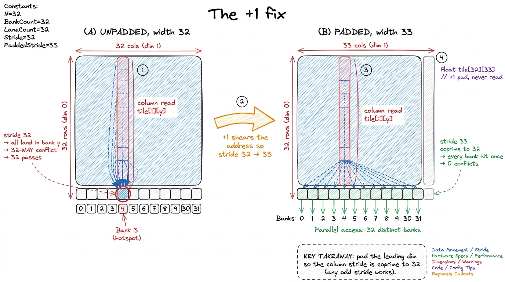
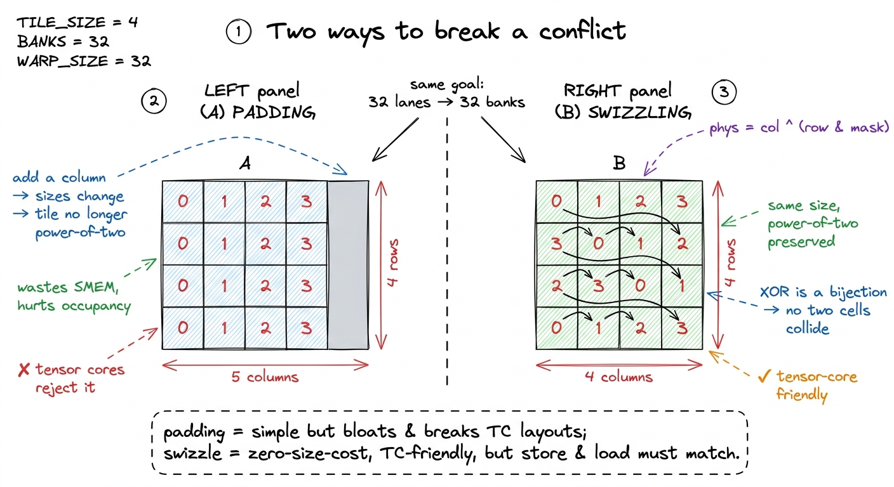
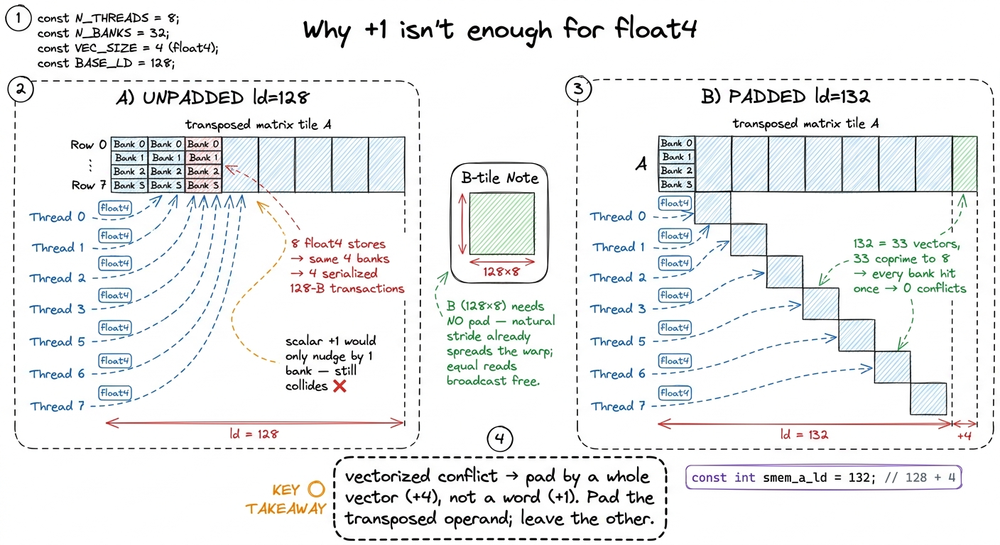
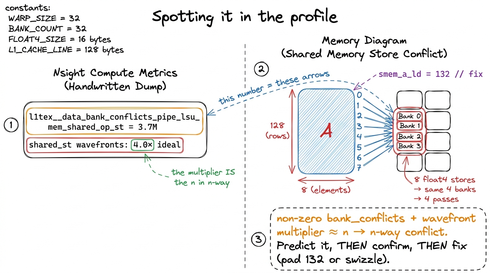
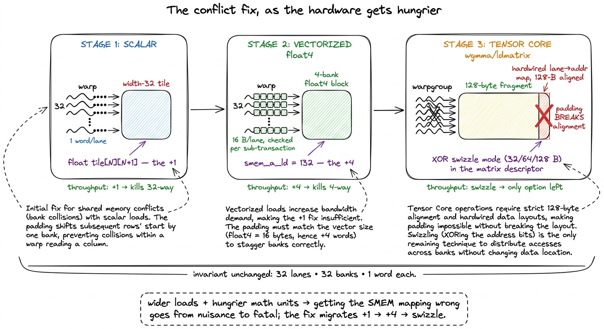

Shared-memory bank conflicts SMEM
Let me start with a puzzle that cost me an afternoon.
I had written a tiled matrix-multiply kernel. It was correct — the output matched the reference to the last bit. Occupancy looked healthy in the profiler. The math said it should be fast. And it was running at roughly a third of the speed I expected. No bug, no obvious stall, nothing on fire. Just... slow.
The culprit turned out to be a property of shared memory that nobody mentions until it bites you: shared memory is not one flat pool of fast bytes. It is physically sliced into 32 banks, and if the 32 threads of a warp happen to ask for the wrong 32 addresses, the hardware quietly serializes what I had assumed was a single-cycle read. The fix, in the end, was one character: a +1. This article is about how to see that problem, why it happens down at the silicon, and the small family of tricks — padding, then +4, then swizzling — that make it go away.
Let me build the whole thing from the ground up, because the fix only makes sense once you understand what a "bank" actually is.
First, what problem is shared memory even solving?
A GPU has two kinds of memory that matter for this story. Global memory (the big HBM stack, 80 GB on an H100) is enormous but far away — a read costs hundreds of cycles of latency. Shared memory is a small scratchpad — up to 228 KiB per SM — that lives right on the SM itself, an order of magnitude lower latency than global.1 Those 228 KiB are not exactly free-and-clear: shared memory and the L1 cache share the same physical SRAM on Hopper, and you carve up the split with cudaFuncAttributePreferredSharedMemoryCarveout. The exact usable maximum per block is 227 KiB after some reserved bytes, not a round 228 — see shared memory & L1.
The whole point of a tiled kernel is to pay the global-memory latency once, park a chunk of data in shared memory, and then hammer on it many times cheaply. In a GEMM (general matrix multiply, C = A·B), each element of A and B gets reused hundreds of times across the output. Staging a tile in shared memory turns hundreds of slow global reads into one slow read plus hundreds of fast shared reads. That reuse is where the speed comes from.
So shared memory sits on the critical path of every fast kernel. Which means: if shared memory is secretly slow, your kernel is secretly slow. Now we need to ask the uncomfortable question — is a shared-memory read actually one cycle, always?
 figure rendering · Why we stage tiles at all. The entire payoff of tiling assumes the sha
figure rendering · Why we stage tiles at all. The entire payoff of tiling assumes the shaThe 32 banks
Here is the mechanism, stated plainly, and then we'll earn it.
Shared memory is addressed as an array of 32-bit words (4 bytes each). Consecutive words are handed out to consecutive banks, round-robin. Bank b owns word w exactly when b = w mod 32. So word 0 lives in bank 0, word 1 in bank 1, on up to word 31 in bank 31 — then word 32 wraps back to bank 0, word 33 to bank 1, and the cycle repeats forever.2 The 32-banks-of-4-bytes geometry has been stable since Fermi and is unchanged on Hopper and Blackwell. There was an old configurable-bank-width knob (cudaSharedMemBankSizeEightByte) from Kepler days, but on any modern architecture you should assume 4-byte banks and design for them.
Why 32 banks and not 30 or 64? Because a warp is 32 threads, and those 32 threads execute in lockstep — they issue the same instruction at the same time. When that instruction is a shared-memory load, all 32 lanes ask for a word simultaneously. The hardware designers built exactly 32 banks so that, in the happy case, all 32 requests can be served in the same cycle: lane 0 reads from bank 0, lane 1 from bank 1, and so on, 32 words delivered in one shot. That is the design point. One warp, 32 lanes, 32 banks, one word each, one cycle.
Let me make that concrete. Say threadIdx.x runs 0..31 and each lane reads smem[threadIdx.x]. Lane 0 wants word 0 (bank 0), lane 1 wants word 1 (bank 1), ..., lane 31 wants word 31 (bank 31). Thirty-two distinct banks. The entire warp's read completes in a single transaction. Beautiful.
But now the natural question — the one that opens the whole rabbit hole. What if two lanes want words that live in the same bank?
 figure rendering · The bank map, the mental model for the whole article. A warp reads at
figure rendering · The bank map, the mental model for the whole article. A warp reads at What a bank conflict actually is
A bank conflict is what happens when two or more lanes in the same warp address different words that live in the same bank. Read that carefully, because every word in it is load-bearing:
- Same warp. Only lanes within one warp can conflict. Threads in different warps issue separately, so they never step on each other.
- Same bank. If the two words are in different banks, no problem — the banks work in parallel.
- Different words. This is the subtle one. If two lanes want the exact same word — same bank, same offset — there is no conflict. More on that in a second.
When a conflict happens, a bank can still only emit one word per cycle. So the hardware does the only thing it can: it splits the warp's request into as many passes as it needs and replays the load. An n-way conflict — n lanes hitting one bank on n different words — takes n passes and costs you a factor of n in shared-memory throughput. The worst case is all 32 lanes hitting one bank on 32 different words: a 32-way conflict, a single warp instruction turned into 32 serialized transactions. Your "one-cycle" read is now a thirty-two-cycle read.
This is exactly what was wrong with my afternoon-eating kernel. A warp instruction I'd counted as free was silently replaying itself. The profiler didn't show a bug, because there wasn't one — the kernel was correct, just paying 32× on an access I'd budgeted at 1×.
Now, the two escape hatches, because you will lean on both later:
Conflicts are per-transaction, not per-instruction. The bank check happens per memory transaction.3 In modern CUDA docs this is phrased as "per wave." A 128-bit vectorized load (float4) is broken by the hardware into sub-transactions, and each sub-transaction is checked for conflicts independently. This is why float4 accesses have their own conflict story — it is not simply "4× the scalar case." We'll hit this head-on in the vectorization section.
Same-word access is free — the hardware broadcasts. If several lanes read the exact same word (same bank and same offset), there is no serialization; the value is fetched once and broadcast to every requesting lane. This is not a minor footnote — it is the entire reason a well-laid-out tile can feed the same B value to a whole warp at full speed. Keep it in your pocket.
So the mental model, which I'll reuse for the rest of the article, is just the bank map: 32 pigeonholes, words dealt into them round-robin, a warp reads fast only when its 32 lanes land in 32 different holes — or all pile onto the same word and get a free broadcast. Everything below is a variation on avoiding the bad middle case.
A worked example: the transpose
The cleanest place to actually see a conflict is a shared-memory transpose. I like it because transposition is precisely the operation that swaps a benign row access for a malicious column access — the two land on opposite ends of the bank map.
Suppose we stage a 32 × 32 tile of floats in shared memory, one word per element, row-major:
__shared__ float tile[32][32];
// each thread loads one element from global into the tile
tile[threadIdx.y][threadIdx.x] = in[...];
__syncthreads();
// now write it out transposed
out[...] = tile[threadIdx.x][threadIdx.y]; // <-- column readLet's walk it by hand, because this is where the abstract "mod 32" becomes a real number. A warp here is 32 threads sharing a fixed threadIdx.y (call it y) with threadIdx.x running 0..31.
The load (tile[y][i], lane i = threadIdx.x). Row y is contiguous, so element tile[y][i] sits at word y*32 + i. As i runs 0..31, the word index steps by 1, so the bank (y*32 + i) mod 32 runs y, y+1, y+2, ... — 32 consecutive banks, all distinct. Perfect coalescing into shared memory, one transaction. So far so good.
The transposed read (tile[i][y], lane i = threadIdx.x again). Now we're reading down a column. Element tile[i][y] sits at word i*32 + y. As i runs 0..31, the word index jumps by 32 each time. And here's the trap: (i*32 + y) mod 32 = y for every single lane, because i*32 mod 32 = 0 always. All 32 lanes compute the same bank y, on 32 different words. That is a full 32-way bank conflict. The read is replayed 32 times.4 ncu (Nsight Compute) names this metric directly: l1tex__data_bank_conflicts_pipe_lsu_mem_shared_op_ld for loads, and the _st variant for stores. A non-zero value on a kernel that "should" be shared-bound is almost always your problem. The Memory Workload Analysis section also surfaces it as a wavefront multiplier — the ratio of actual to ideal transactions.
Notice why it's so bad: a stride of 32 words is exactly one full trip around the bank map. Stride 32 aliases to "always the same bank." The transpose turned a stride-1 access (visits all banks) into a stride-32 access (visits one bank), and the profiler had no reason to complain because the code is perfectly correct.
 figure rendering · The column read, drawn lane by lane. Because 32 is exactly the number
figure rendering · The column read, drawn lane by lane. Because 32 is exactly the number The one-character fix, and why it works
The fix is one character. Pad the inner dimension by a single element so each row is 33 words wide instead of 32:
__shared__ float tile[32][33]; // <-- the +1Now element tile[i][y] sits at word i*33 + y. Redo the arithmetic for the column read: the bank is (i*33 + y) mod 32 = (i + y) mod 32 (because 33 mod 32 = 1). As i runs 0..31, the expression (i + y) mod 32 sweeps through all 32 banks exactly once. The 32-way conflict collapses to zero.
Sit with why this works, because it's the whole trick and it generalizes. The padding column is never read and never written. It exists purely to shear the address arithmetic. A stride of 32 aliases to bank 0 (32 and 32 share every factor). A stride of 33 is coprime to 32 — they share no common factor — so stepping by 33 visits every residue mod 32 before repeating. One wasted word per row buys a 32× throughput win on that access. Any stride coprime to 32 would do; +1 is just the cheapest way to get there.5 "Coprime to 32" is the real rule, and 32 is a power of two, so any odd stride is coprime to it. That's why +1, +3, or +5 all work but +2 or +4 do not fix a scalar conflict — they still share a factor of 2 with 32 and only halve the conflict rather than kill it. Keep this in mind; it's exactly why the vectorized fix later needs a +4, not a +1.

figure rendering · The padding fix, side by side. Widening each row from 32 to 33 changesPadding versus swizzling — the two philosophies
Padding is the blunt instrument, and for most tiled kernels it's the right one: cheap, obvious, one line. But it has two real downsides, and both come back to haunt fast kernels.
First, it wastes shared memory. With up to 228 KiB of SMEM per SM and every resident block fighting for that budget, a padded 128 × 128 tile — 128 rows of 129 words instead of 128 — can be the straw that pushes you over an occupancy cliff, where one fewer block fits per SM. You bought back a 32× on one access and paid for it with fewer warps to hide latency. Not always a good trade.
Second, and more seriously, padding is incompatible with the tensor-core load instructions. We'll get to why, but the short version is that they demand specific, contiguous 128-byte layouts and will not tolerate a stray +1.
The alternative is swizzling. Instead of adding a column, you permute the logical-to-physical address mapping with an XOR, so that accesses which used to collide scatter across banks — without changing the tile's size at all. The canonical form:
// map logical (row, col) to a swizzled physical column
int phys_col = col ^ ((row * stride / bank_bytes) & mask);The idea: each row gets XOR-ed with a different rotation of the bank assignment, so rows that used to collide on one bank now each land on a different bank. Why XOR specifically? Because XOR is a bijection — it's reversible, and no two distinct logical elements ever map to the same physical slot. You get the scatter of padding without spending a single extra byte, and because the tile stays a clean power-of-two, it's exactly the shape the tensor-core loaders demand.
The cost is real: the store and the load must apply the same swizzle, so the XOR arithmetic shows up in two places and is very easy to get subtly wrong — write it right, read it wrong, and your kernel is silently incorrect rather than merely slow. This is why production libraries like CUTLASS express layouts as composable functions rather than raw indices: the swizzle becomes part of a Layout object, applied consistently everywhere, instead of a ^ you sprinkle by hand and hope you matched.

figure rendering · Padding vs swizzling. Both scatter the accesses across banks; paddingHow it shows up in a real GEMM
Everything so far was a toy transpose. Let's put it where it actually costs money: the GEMM ladder — the standard progression of kernels from a naive triple loop up toward cuBLAS, which I'm following in the spirit of Simon Boehm's CUDA-MMM writeup and salykova's GPU GEMM.
Bank conflicts first appear the moment we start staging tiles — kernel 3, the shared-memory version — and they sharpen with every optimization after it. The classic trigger is the transposed load of A.
Here's why A gets transposed. In the inner product of a tile, each thread reads a column of A and a row of B and accumulates their dot product. Reading down a column of A as it's stored row-major is a strided, ugly access. So the fast kernels transpose the A tile while staging it into shared memory — write it column-major so that the later inner-loop reads become nice contiguous rows. Great for the read... but that transposed store is exactly the column access from our toy example. Without care, a warp storing A lands all its lanes in a handful of banks and serializes. We've moved the conflict from the read to the store, but it's the same beast.
Then it gets worse with vectorization — and this is the part that surprised me the first time.
The vectorized twist: why +1 becomes +4
To go faster, we stop moving data one float at a time and start moving four at once with float4. This is the win that carries the ladder's kernel 6 from 68.7% to 78.4% of cuBLAS.6 These are Simon Boehm's measured numbers on an A6000: naive 1.3%, GMEM coalescing 8.5%, SMEM caching 12.8%, 1D blocktiling 36.5%, 2D blocktiling 68.7%, vectorized 78.4%, autotuning 84.8%, warptiling 93.7%. Exact percentages depend on GPU and matrix size, but the shape of the ladder — most of the win is coalescing + tiling, with vectorization and warptiling as the finishing moves — holds across hardware. A float4 is 16 bytes, so a single LDS.128 / LDG.E.128 instruction moves four consecutive words — meaning four consecutive banks — in one sub-transaction.
Now redo the conflict arithmetic with vectors. Remember the escape hatch: conflicts are checked per transaction, and a float4 splits into sub-transactions. Consider a 128 × 8 transposed A tile where each thread stores a float4 (16 bytes, 4 consecutive banks). If eight adjacent threads each issue a float4 to the same four columns of that tile, all eight pile onto the same four banks. The store fans out into four serialized 128-byte transactions — a 4-way conflict wearing a float4 costume.
Here's the subtlety that tripped me up: the scalar +1 fix does not help here. Padding by one word offsets each row by one bank, but a float4 spans four banks, so a +1 shift just makes the four-bank group straddle a boundary — it doesn't separate the eight colliding threads. What you need is to offset each row by a whole vector. salykova's tiled kernel does exactly this — it pads the leading dimension of the staged, transposed A block from 128 to 132 floats:
const int smem_a_ld = 132; // 128 + 4, pads the transposed A tileThe +4 (16 bytes, one full float4) is the vectorized analogue of the scalar +1. It offsets each row by one vector so the eight threads that used to collide now walk across all 32 banks instead of piling onto four. This isn't arbitrary — it's the coprimality rule again, lifted up one level: at word granularity you need an odd stride; at float4 granularity you need the stride, measured in vectors, to be coprime to 8 (since 32 banks / 4 banks-per-vector = 8 vector-slots). A row of 132 floats is 33 vectors, and 33 is coprime to 8. Same trick, one abstraction layer up.
And here's a clean asymmetry worth remembering. The B tile needs no padding. Its 128 × 8 layout is already a power of two whose natural row stride spreads a warp across 32 distinct banks — and where lanes read the same B value, the hardware broadcasts it for free (there's that escape hatch paying off). So the rule of thumb: you pad the operand you transpose, and leave the other alone.

figure rendering · The vectorized fix. A float4 spans four banks, so the scalar +1 can'tSpotting it in the profiler before you spend a day on it
Everything above is a prediction. The discipline that separates guessing from engineering is: predict the conflict from the access pattern, then confirm it in the profiler before you change a line. Nsight Compute (ncu) gives you exactly the two numbers you need.
First, the conflict metric itself: l1tex__data_bank_conflicts_pipe_lsu_mem_shared_op_ld (loads) or ..._op_st (stores). If this is zero, you have no shared-memory bank conflicts — stop, and go find your real bottleneck elsewhere. If it's a big number, keep reading.
Second, the wavefront multiplier in the Memory Workload Analysis section — the ratio of actual shared transactions to the ideal. A multiplier of ~4.0× on your A store means a 4-way conflict; ~32× means the full column-collision disaster. The multiplier is the n in your n-way conflict, read straight off the profiler. You can even predict it by hand first (from the access pattern), then check that the profiler agrees — when they match, you understand the kernel.

figure rendering · Reading the evidence. The conflict metric and the wavefront multiplierThe honest part: is it even worth fixing?
Now for the caveat that keeps everyone honest, and it's a big one.
Simon Boehm — whose GEMM ladder we're following — skipped the bank-conflict kernels entirely. In his words: "I skipped kernels 7 and 8, which I wrote while figuring out how to best eliminate shared memory bank conflicts. They eliminate the conflicts but were overall still slower, so I won't cover them here." Read that twice. He removed the conflicts, and the kernel got slower, because the padding hurt occupancy more than the conflicts hurt throughput.7 This is the most important lesson in the whole article and the easiest to forget. A bank conflict is only worth fixing if shared memory is actually on your critical path. If the kernel is bound by something else — global-memory bandwidth, occupancy, instruction issue — then serializing a shared access you weren't waiting on anyway costs nothing, and "fixing" it by padding can cost you a resident block. Profile first, always.
So the payoff from killing bank conflicts is real but conditional, and the two extremes tell the whole story:
- A 2-way conflict on an access that is not your bottleneck buys you exactly nothing. You'll spend a day, move the metric to zero, and the wall-clock won't budge — or will get worse, like Boehm's.
- The same conflict on the inner-loop read of a compute-bound kernel — where the tensor cores are starving for operands and shared memory is the critical path — is the difference between 80% and 90% of peak.
Where does the GEMM ladder actually get its speed? Cleaning up shared-memory access is one contributor among several — global-memory coalescing, register tiling, vectorization, and warptiling — that together climb from the naive 1.3% of cuBLAS up to 93.7%. Bank-conflict removal is a finishing move on that ladder, not a foundation. Do the coalescing and the tiling first; they're worth far more.
The rule I've internalized: predict, then profile, then fix — in that order. Check l1tex__data_bank_conflicts_* before you spend an afternoon rearranging shared memory. If the number's already small, you were about to optimize the wrong thing.
The tensor-core wrinkle — where padding finally dies
There's one setting where you don't get to make this cost-benefit call, because padding isn't even on the menu: the Hopper tensor-core path.
The warpgroup matrix instruction wgmma and the shared-memory-to-register loader ldmatrix do not read shared memory the way a scalar thread does. They consume it in fixed 128-byte-wide fragments with a hardwired lane-to-address mapping — and that mapping is itself prone to bank conflicts on a naive row-major tile. So you have to fix the layout. But you cannot pad your way out, because wgmma expects the operand tile to match one of a small set of swizzle modes (32-byte, 64-byte, or 128-byte) baked into its matrix descriptor. A stray +1 padding column would break the 128-byte alignment the instruction assumes, and it simply won't run.8 This is why the tensor-core kernels look so different from the CUDA-core ones — the shared-memory layout stops being your free choice. You pick one of the hardware's swizzle modes, lay the tile out to match it exactly, and describe it to wgmma in a matrix descriptor. On Blackwell's tcgen05 path the operands move through a separate Tensor Memory (TMEM) instead of registers, which changes the conflict story again — a topic for its own article.
So the whole arc, in one sentence: scalar kernels get bank conflicts and fix them with +1; vectorized kernels get them worse and fix them with +4; and tensor-core kernels can't pad at all, so they adopt the hardware's own XOR-swizzle modes and describe the layout to the instruction. The underlying invariant never changes — 32 lanes, 32 banks, one word each — but as the loads get wider and the math units get hungrier, the cost of getting the mapping wrong climbs from a nuisance you might skip to the whole ballgame you can't.

figure rendering · The evolution of the fix. As accesses widen from a word to a float4 toWhere this leaves us
Let me close the loop on that puzzle from the top. My kernel was slow because a shared-memory read I'd budgeted at one cycle was quietly replaying itself many times — a bank conflict, invisible to correctness, visible only in the profiler's data_bank_conflicts metric and its wavefront multiplier. The fix was a single padding element that sheared the column stride from 32 (one bank, forever) to 33 (all 32 banks, once). And the deeper lesson was that this trick has a family: a +1 for scalars, a +4 for float4, and a mandatory XOR swizzle once the tensor cores take over — each one just a different way of enforcing the same invariant, thirty-two lanes into thirty-two banks.
The one thing I'd tattoo on my wrist: a bank conflict is only worth fixing when shared memory is on your critical path. Boehm skipped his conflict kernels because they were slower. salykova padded to 132 because in his kernel shared memory was the bottleneck. Same phenomenon, opposite decisions — and the profiler, not the intuition, is what told each of them which world they were in.
Next we put the shared-memory tile under the microscope properly and profile the exact GEMM kernel where these conflicts first cost us measurable throughput — the point where "it's correct and it's slow" finally becomes "it's correct, it's fast, and I can prove why."